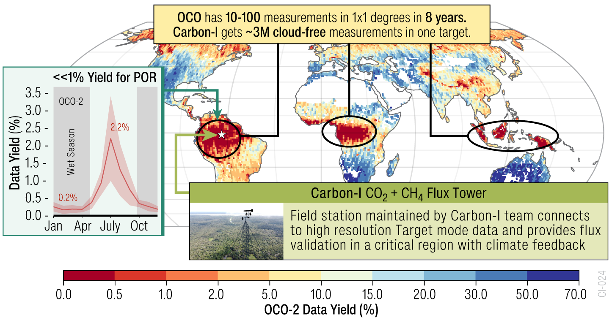
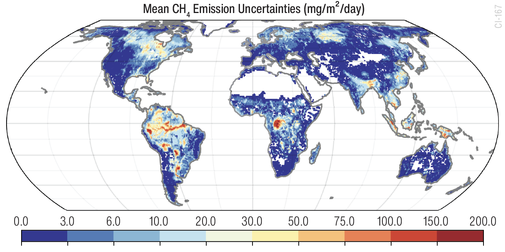

SCIENCE
Clouds in the humid tropics are the primary reason for low data yields in current satellite missions
With its fine spatial sampling, Carbon-I can peek through cloud gaps, dramatically increasing data availability in regions with the largest carbon fluxes, greatest uncertainties and climate feedback. Frequent shallow cumulus clouds in the tropics have cloud gaps that are smaler than 1km, dramatically reducing the data yield of current greenhouse gas missions. Read more about clouds in the tropics in our GRL paper.
We know the least about the place that matters most—carbon flux uncertainties in the humid tropics are still the highest on Earth.
Top: Current missions leave a data gap in the humid tropics, where often far less than 1% of the data passes the stringent quality filters due to residual clouds within the satellite footprints. With its fine spatial sampling, Carbon-I can peek through cloud gaps, dramatically increasing data availability in regions with the largest carbon fluxes, greatest uncertainties and climate feedback.
Bottom:
 
CH4 emissions are heterogenous across the globe.
Bottom-up methane emissions distributions show key regions, which dominate global emissions (red colors=50%ile of total emissions). The largest fluxes and uncertainties are in the tropics, against which arctic emissions are nearly negligible. However, hypothesized sources in the inventory may be entirely wrong. Carbon-I will use the global and target modes in concert to identify and focus on local verified sources driving global fluxes.

High spatial resolution enables plume mapping, allowing direct attribution
Carbon-I will investigate hotspots and flux heterogeneity globally and use the target mode as a magnifying glass. The detection of localized plumes across various source types (airborne on the left, EMIT on the right) enables applications and field campaigns (bottom left).

Carbon-I can see through small aerosols.
Cities Occluded by Pollution: Dense pollution can appear opaque in visible wavelengths, yet Carbon–I’s near-infrared bands reveal un- derlying ground structures. Aerosols that dominate scattering in the O2 A-band see 1–2 orders lower scattering efficiency at 2 µm, so an oxygen-band instrument might flag these scenes as unusable while Carbon–I acquires them with minimal bias.
Seeing through Fire Smoke: Active fires produce smoke that blocks visible light but becomes semi-transparent near 2 µm, allowing thermal emissions to illuminate the fire front. Carbon–I thus measures gas plumes at the ignition source, bypassing smoke obscuration. This capability also covers industrial and urban pollution, enabling direct observation of major carbon-bearing gases—crucial information that shorter-wavelength methods would lose.